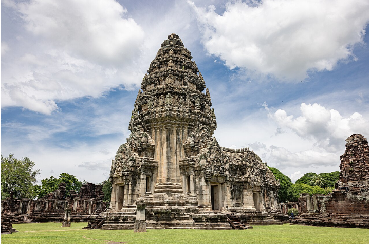
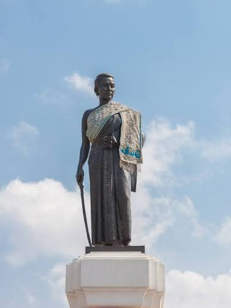

ปราสาทหินพิมาย
มรดกทางวัฒนธรรมที่ล้ำค่า, 29 มิ.ย. 2026

ประวัติศาสตร์
ปราสาทหินพิมาย เป็นโบราณสถานสำคัญของประเทศไทย ตั้งอยู่ในอำเภอพิมาย จังหวัดนครราชสีมา สร้างขึ้นในราวพุทธศตวรรษที่ 16–18 ในสมัยอาณาจักรขอม มีลักษณะเป็นสถาปัตยกรรมแบบขอมที่มีขนาดใหญ่และงดงามที่สุดแห่งหนึ่งในประเทศไทย เดิมสร้างขึ้นเพื่อใช้เป็นศาสนสถานในศาสนาพุทธนิกายมหายาน ก่อนที่จะได้รับอิทธิพลของศาสนาฮินดูในเวลาต่อมา
ท้าวสุรนารี หรือ ย่าโม
ป็นวีรสตรีไทยผู้กอบกู้นครราชสีมา ในปี พ.ศ. 2369

ประวัติศาสตร์ ย่าโม
เป็นวีรสตรีไทยผู้กอบกู้นครราชสีมา ในปี พ.ศ. 2369 เจ้าอนุวงศ์แห่งเวียงจันทน์ยกทัพมายึดเมือง ย่าโมได้ใช้กลลวงเลี้ยงสุราทหารลาวจนเมามาย แล้วนำชาวเมืองเข้าโจมตีขับไล่จนสำเร็จ ร.3 จึงโปรดเกล้าฯ แต่งตั้งเป็น "ท้าวสุรนารี"